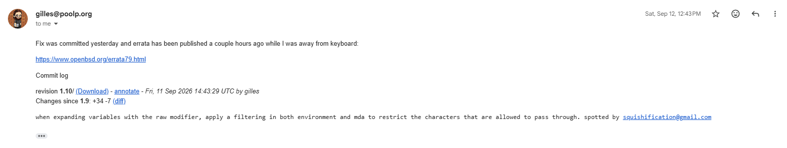

OpenSMTPD / mda_unpriv.c · env-var / command injection · OpenBSD 7.9 errata 015 · CVE pending
Crafted email addresses could smuggle shell-significant characters through OpenSMTPD’s raw variable modifier into the mail-delivery agent’s environment, reaching command execution.
OpenSMTPD lets operators template mail-delivery commands with variables drawn from the envelope — sender and recipient user/domain, the subaddress extension, and so on. The raw modifier is meant to pass a value through while neutralising characters that would be dangerous to the delivery command.
In mda_unpriv.c, when variables were expanded with the raw modifier, the user- and domain-derived components were written into the mail-delivery agent’s environment without filtering. An attacker who controls an address component could therefore smuggle the very characters the raw modifier is supposed to strip, and have them reach the shell and scripts the MDA executes — command execution in the delivery context.
Reported to the OpenSMTPD maintainer and fixed in OpenBSD 7.9. Revision 1.10 of mda_unpriv.c adds mda_escape(), which copies each value with bounds checking and replaces every MAILADDR_RAW_ESCAPE character with ':', applied to all six address fields (recipient, destination and sender user/domain) and the MDA subaddress before the environment is built. Shipped as errata 015. A CVE assignment is pending.
